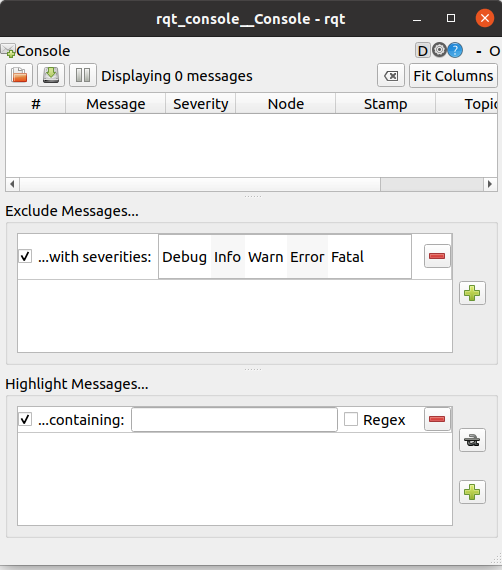

Потом со страницы Turtlebot3 simulation выполняем пункт 6.1.1:
cd ~/catkin_ws/src/
git clone -b noetic-devel https://github.com/ROBOTIS-GIT/turtlebot3_simulations.git
cd ~/catkin_ws && catkin_make
Возникала ошибка, что ros не видел нужный мне уже установленный пакет turtlebot3_gazebo и вообще все пакеты из catkin_ws/src.
Ошибку устранил после того как в файле ~/.bashrc расположил строки в правильном порядке:

Если эти строки в другом порядке расположить, тогда возникает ошибка, что ros не видит пакеты в catkin_ws/src.
export TURTLEBOT3_MODEL=burger
Запускаем в gazebo файл.launch:
roslaunch turtlebot3_gazebo turtlebot3_world.launch
Из-за того что не выполнил вначале export TURTLEBOT3_MODEL=burger возникает ошибка:

Выполнил обе команды, но теперь ошибка:

Сказали, что проблема в видеокарте. Я всё-же решил установить отдельно gazebo на ubuntu и проверить, как он будет запускаться.
Установка Gazebo
Устанавливать буду классический gazebo11 со страницы Install Gazebo using Ubuntu packages.Есть несколько способов установки Gazebo:
- Как написано, используя ubuntu пакеты на этой странице скачиваем архивы и потом распаковываем в бинарные пакеты.
- Одной командой:curl -sSL http://get.gazebosim.org | sh и потом выполнить команду gazebo
- Шаг за шагом, буду его использовать:
- Установим доступ к репозиторию packages.osrfoundation.org:
sudo sh -c 'echo "deb http://packages.osrfoundation.org/gazebo/ubuntu-stable `lsb_release -cs` main" > /etc/apt/sources.list.d/gazebo-stable.list'Можем проверить, что путь к репозиторию записан и правильно:
cat /etc/apt/sources.list.d/gazebo-stable.list
Если всё верно, то увидим:

- Установка ключей на свой компьютер:
wget https://packages.osrfoundation.org/gazebo.key -O - | sudo apt-key add -

- Установка Gazebo:
Обновим debian базу данных:sudo apt-get updateТеперь установим Gazebo 11:
sudo apt-get install gazebo11
Будет установлен пакет gazebo11 самой новой версии (11.14.0-1~focal)
Дополнительно нужно установить еще один пакет:
sudo apt-get install libgazebo11-dev
У меня был уже установлен пакет libgazebo11-dev самой новой версии (11.14.0-1~focal) - Проверяем: gazebo
У меня не открылся:

Видимо всё же проблема в видеокарте.
- Установим доступ к репозиторию packages.osrfoundation.org:
Запуск gazebo через xterm
Попытаюсь запустить gazebo через xterm, как запустил в Docker, раздел Урок 5.4 Создание контейнеров и управление ими с помощью Docker.- xterm в хосте не был установлен, установил: sudo apt install xterm
- Команда: xterm
Открылось окно (терминал) xterm. - export TURTLEBOT3_MODEL=burger
roslaunch turtlebot3_gazebo turtlebot3_world.launch

Никакой разницы с выполнением этих команд в терминале GNOME.
Запуск gazebo через xvfb
Xvfb — это X11 сервер, который выполняет все графические операции в памяти без вывода на экран.
Установка: sudo apt-get install xvfb
Запуск: xvfb-run -s "-screen 0 1400x900x24" bash
export TURTLEBOT3_MODEL=burger
roslaunch turtlebot3_gazebo turtlebot3_world.launch

В другом терминале:
gzclient
Ошибка сегментирования
rosnode list
rosrun rqt_graph rqt_graph

Я так и не понял, что запустил, какой-то gazebo поцоканный. В любом случае не подходит поскольку не видно мультиков.
Запуск gazebo через ros2 в xterm
Открыл контейнер на базе ros2Выполнил команду xterm.
Получен ответ: Xt error: Can't open display: %s
xterm: DISPLAY is not set
Если выполнить команду: gazebo
ros2 launch turtlebot3_gazebo turtlebot3_world.launch.py

В общем нужно делать, как в Docker, раздел Урок 5.4 Создание контейнеров и управление ими с помощью Docker.
через MobaXterm
- На windows-компьютер скачиваем zip-архив программы по этой ссылке Скачал на ubuntu, потом через флэшку скопировал на windows.
- Установка. Запустил файл внутри пакета, в процессе установки сообщил, что не нашел файл.dat. Проигнорировал.
- Нажал в правом верхнем углу x server, остановил его.
- Нажал кнопку Session. Заполнил поля host и specify username. Убедился, что X11-Forvarding, галочка стоит.

- Теперь на ubuntu-компьютере:
Установка X11:
sudo apt-get install xauth xfonts-base
Уже было всё установлено.

- nano /etc/ssh/sshd_config
Пустой и в записи запрещён.
Нашел файл /etc/ssh/ssh_config:
sudo chmod ugo+w /etc/ssh/ssh_config
nano /etc/ssh/ssh_config
Который создал (sshd_config), чтобы он не вносил путаницу, удалил.
Перезагрузился. - Для демонстрации установил X11-приложения:
sudo apt install x11-apps
У меня уже были установлены. - mobaxterm:
адрес 192.168.0.8 пингуется.
Использование rqt_graph
Запустили две ноды: turtlesim_node, которая является подписчиком на топик и turtle_teleop_key, которая является публикатором на тот же самый топик. Графически мы можем это увидитеть с помощью утилиты rqt_graph.
Программа rqt_graph показывает связи между топиками и нодами.
Чтобы установить эту программу:
sudo apt-get install ros-<distro>-rqt
sudo apt-get install ros-<distro>-rqt-common-plugins
<distro> заменить на название дистрибутива ROS: (noetic, kinetic и т.подобное).
Чтобы выполнить эту программу, команда:
rosrun rqt_graph rqt_graph

rqt_plot
rqt_plot - эта утилита отображает график времени прокрутки данных, опубликованных в топиках.Сперва нужно выполнить команду: rosrun rqt_plot rqt_plot
Использование rqt_console и rqt_logger_level
rqt_console подключается к Ross logging framework, чтобы вывести выходные данные с узлов.rqt_logger_level позволяет нам изменять уровень детализации (DEBUG, WARN, INFO и ERROR) узлов по мере их запуска.
Чтобы вызвать rqt_console, служит команда:
rosrun rqt_console rqt_console

Чтобы вызвать консоль rqt_logger_level, служит команда:
rosrun rqt_logger_level rqt_logger_level

Работа с roswtf
Ссылки: Getting started with roswtf
В Linux вы можете проверить, запущен ли roscore по-прежнему или нет, с помощью чего-то вроде этого (если вы видите строку, подобную этой, которая включает rosmaster, который запускается как часть roscore, значит, roscore запущен).:
ps -ef | grep -i rosmaster
roswtf исследует вашу систему, чтобы попытаться найти проблемы. Давайте попробуем это сделать:
roscd rosmaster
roswtf

- Package: rosmaster в этом выводе сообщается, что вы запустили roswtf в каталоге основного пакета ros.
- Static checks summary: это отчет о любых проблемах с файловой системой или о любых проблемах, не связанных с выполнением (т.е. для запуска не требуется roscore). В нем сообщается, что ошибок не было.
- ROS Master does not appear to be running. программа roscoe не запущена. roswtf не проводил никаких онлайн-проверок.
Для следующего шага нам нужно, чтобы был подключен ведущий сервер, поэтому откроем второй терминал и:
roscore
В первом терминале выполним ту же последовательность действий еще раз:
roscd rosmaster
roswtf

Теперь, когда запущен roscore, roswtf провел онлайн-проверку вашего графика. В зависимости от того, сколько узлов ROS у вас запущено, это может занять много времени. Как вы можете видеть, на этот раз было выдано предупреждение:
WARNING The following node subscriptions are unconnected: * /rosout: * /rosoutros wtf предупреждает вас о том, что корневой узел подписан на раздел, в котором никто ничего не публикует. В данном случае это ожидаемо, поскольку больше ничего не запущено, поэтому мы можем проигнорировать это.
roswtf будет предупреждать вас о том, что выглядит подозрительно, но может быть нормальным для вашей системы. Он также может сообщать об ошибках при возникновении проблем, которые, по его мнению, являются неправильными.
В этой части мы установим в ROS_PACKAGE_PATH неверное значение. Мы также остановим наш roscoe, чтобы упростить вывод, который вы видите.
roscd
ROS_PACKAGE_PATH=bad:$ROS_PACKAGE_PATH roswtf

Есть много других типов проблем, которые может обнаружить roswtf. Если вы оказались в тупике из-за проблем со сборкой или связью, попробуйте запустить его и посмотреть, сможет ли это направить вас в правильном направлении.